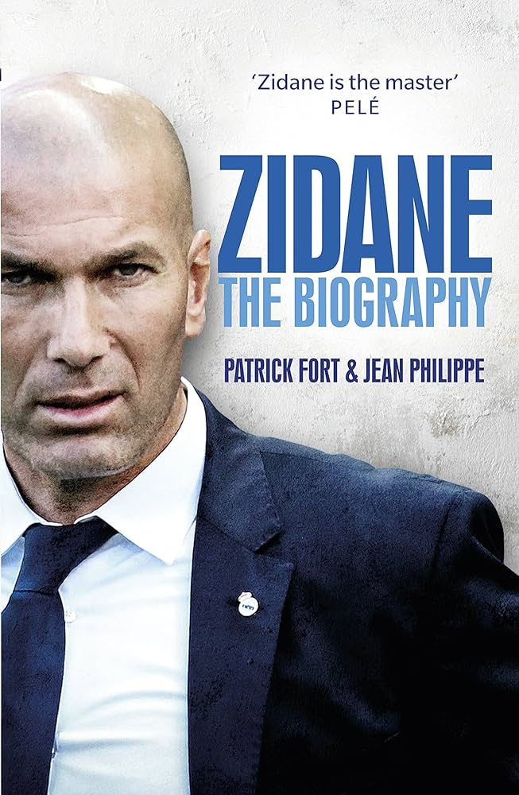

Buku Cerita Anak Umur 1-3 tahun
Rp.75.000
Bantu si kecil mengenal dunia dengan cara yang seru! Buku ini dirancang khusus untuk anak usia 1-3 tahun dengan ilustrasi warna-warni yang menarik perhatian dan teks sederhana yang mudah diingat.

Buku Cerita Anak umur 3-5 tahun
Rp55.000
Latih rasa ingin tahu si kecil dengan petualangan yang seru! Di usia 4-5 tahun, anak-anak sedang semangat-semangatnya belajar hal baru. Buku ini dirancang khusus dengan kalimat sederhana dan ilustrasi penuh warna yang akan membuat mereka betah berlama-lama membaca.

Buku Cerita Anak umur 6-8 tahun
Rp85.000
Apakah Bunda sedang mencari cara agar si kecil tidak kecanduan gadget? Buku ini adalah solusinya! Pada usia emas (golden age), membacakan cerita adalah cara terbaik untuk melatih fokus dan kemampuan bahasa anak.

Buku Cerita Anak umur 6-8 tahun
Rp75.000
Ajak mereka berkelana mengenal [Sebutkan tema buku, misal: dunia hewan/pertemanan/alam]. Tidak hanya membaca, Bunda juga sedang membangun ikatan batin yang kuat dengan mereka. Dukung tumbuh kembangnya, jauhkan dari layar, dan buka dunia baru lewat buku ini.

Buku Cerita Anak umur 6-8 tahun
9.000
Memasuki usia 6-7 tahun adalah masa transisi yang seru dari melihat gambar ke mulai merangkai kata. Buku ini dirancang khusus dengan kalimat yang sederhana namun tetap imajinatif untuk melatih kepercayaan diri si kecil.

Buku Jose Mourinhou
Rp.75.000
José Mourinho adalah pelatih sepak bola asal Portugal yang dijuluki **“The Special One.”** Lahir pada 26 Januari 1963 di Setúbal, ia dikenal karena kepercayaan diri, taktik disiplin, dan mental juara. Namanya melejit setelah membawa FC Porto menjuarai Liga Champions 2004, lalu sukses bersama Chelsea FC. Ia juga melatih klub besar seperti Inter Milan, Real Madrid CF, dan Manchester United FC, termasuk meraih treble bersama Inter pada 2009/2010. Mourinho dikenal dengan gaya bermain pragmatis, pertahanan solid, serta kepribadian yang tegas dan kontroversial, menjadikannya salah satu pelatih paling sukses di era modern.

Buku Zidane
Rp.80.000
Zinedine Zidane adalah mantan pemain dan pelatih sepak bola asal Prancis yang lahir pada 23 Juni 1972 di Marseille. Ia dikenal sebagai salah satu gelandang terbaik sepanjang masa karena teknik, visi bermain, dan ketenangannya di lapangan. Sebagai pemain, Zidane membawa Prancis menjuarai Piala Dunia 1998 dan sukses bersama klub seperti Juventus FC dan Real Madrid CF. Sebagai pelatih, ia mencetak sejarah bersama Real Madrid dengan memenangkan tiga gelar Liga Champions berturut-turut (2016–2018). Zidane dikenal sebagai pelatih yang tenang, karismatik, dan mampu mengelola pemain bintang dengan baik.

Buku Pep Guardiola
Rp.75.000
Pep Guardiola adalah pelatih sepak bola asal Spanyol yang lahir pada 18 Januari 1971 di Santpedor. Ia dikenal sebagai salah satu pelatih paling inovatif dan sukses dalam sejarah sepak bola modern. Sebagai pemain, Pep merupakan gelandang andalan FC Barcelona di era Johan Cruyff. Namun namanya semakin mendunia saat menjadi pelatih Barcelona (2008–2012). Ia memperkenalkan gaya bermain **tiki-taka**—penguasaan bola cepat dengan umpan-umpan pendek—dan memenangkan banyak gelar, termasuk dua Liga Champions. Setelah itu, ia melatih FC Bayern Munich dan kemudian Manchester City FC. Bersama Manchester City, Pep meraih berbagai gelar Liga Inggris dan mencetak sejarah dengan meraih treble pada musim 2022/2023. Pep dikenal sebagai pelatih yang perfeksionis, detail dalam taktik, serta sangat menekankan penguasaan bola dan kerja sama tim. Ia dihormati karena konsistensi, inovasi, dan kemampuannya membangun tim yang dominan di setiap liga yang ia tangani.

Buku Sir Alex Ferguson
80.000
Sir Alex Ferguson adalah salah satu manajer sepak bola paling sukses dan berpengaruh dalam sejarah olahraga dunia. Ia lahir pada 31 Desember 1941 di Glasgow, Skotlandia. Sebelum menjadi pelatih legendaris, Ferguson pernah berkarier sebagai pemain sepak bola dan bermain untuk beberapa klub di Skotlandia. Namanya dikenal luas saat melatih Manchester United selama lebih dari 26 tahun (1986–2013). Di bawah kepemimpinannya, klub tersebut meraih berbagai gelar bergengsi, termasuk 13 gelar Liga Inggris, 5 Piala FA, dan 2 trofi Liga Champions UEFA. Salah satu pencapaian terbesarnya adalah meraih treble winners pada musim 1998–1999, ketika Manchester United menjuarai Liga Inggris, Piala FA, dan Liga Champions dalam satu musim. Sebelum sukses di Inggris, Ferguson juga membawa Aberdeen F.C. meraih kejayaan di Skotlandia dan Eropa, termasuk memenangkan Piala Winners Eropa pada tahun 1983 dengan mengalahkan Real Madrid di final. Ferguson dikenal sebagai sosok yang tegas, disiplin, dan memiliki kemampuan luar biasa dalam membangun tim serta mengembangkan pemain muda. Banyak pemain besar lahir di bawah asuhannya, seperti David Beckham, Ryan Giggs, dan Cristiano Ronaldo. Atas kontribusinya dalam dunia sepak bola, ia dianugerahi gelar kebangsawanan oleh Kerajaan Inggris pada tahun 1999, sehingga dikenal dengan sebutan "Sir". Hingga kini, Sir Alex Ferguson dianggap sebagai simbol kepemimpinan, konsistensi, dan mental juara dalam dunia sepak bola.